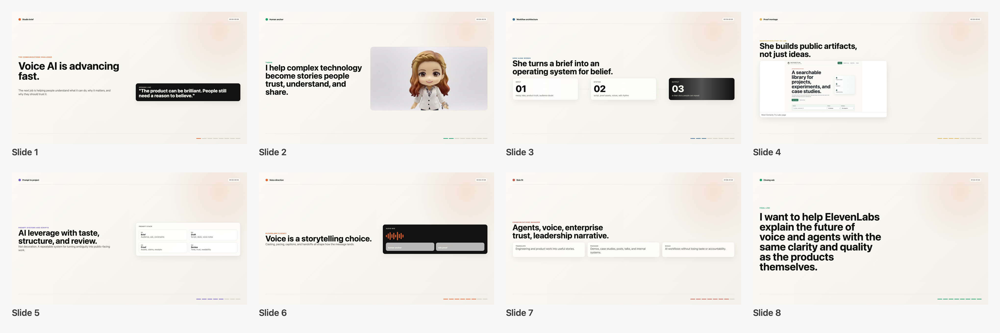

Final Video
Executive Summary
This project turned a job application into a proof artifact. Instead of only sending a resume and written note, the work became a short narrated deck showing how Ilana thinks, builds, reviews, and packages AI-powered communication work.
The build moved through deck design, slide export, AI voice segment generation, timing alignment, and video packaging. The key constraint was speed: make something polished enough to represent the work, but keep the process lightweight enough to finish while the idea still had momentum.
First Review Feedback
The first review panel scored the prototype at 6.4/10 and marked it as a strong concept that needed another revision before public viewing. The reviewers liked the differentiated ElevenLabs-specific premise, the multi-voice idea, the cleaner product-style visual system, and the early personal cue slides.
The blockers were practical: the opening read as novelty-first, the voices needed clearer casting, some phrasing felt too sharp for a communications role, the old deck did not show enough proof of real work, and the 2:20 runtime was too long for the amount of visual variation.
- Reframe the opening around the communication challenge, not the character verdict.
- Make Ilana the anchor instead of using her voice only as section punctuation.
- Replace defensive language with precise leadership language.
- Cut the runtime closer to 75-100 seconds.
- Add proof visuals from Most Certainly Try, scripts, prompt systems, case studies, and the build process.
- End with a direct closing ask.
Production Approach
The deck was built as local HTML so the design could be revised quickly and rendered into slide PNGs. ElevenLabs audio was handled as multiple voice segments rather than one stretched file, which made it possible to align slide cuts with the actual narration beats.
Several QA passes mattered: removing stale deck chrome, restoring the correct slide order, replacing a misleading sidebar, preserving the progress bar, removing footer clutter, and fixing the early export where audio timing drifted against the slides.
Tools and Roles
- ElevenLabs: generated the voice segments and showed audio direction as part of the communication craft.
- OpenClaw and Codex: managed edits, file organization, rendering, QA, and site publishing support.
- HTML and CSS: made the deck easy to revise without a heavyweight presentation tool.
- Swift and AVFoundation: assembled the final MP4 locally when ffmpeg was not available.
Why It Matters
The result is not just a pitch video. It is a working sample of the workflow itself: a communicator using AI tools to create a clearer artifact, spot quality problems, revise quickly, and package the result for a real audience.
Deck Frames
